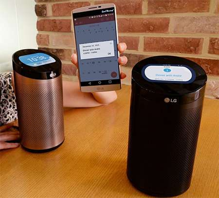

返回
公司动态
下一篇
Mac 版 Twitter 终于更新了
三星称新一代 Tizen 电视将更安全
2015-12-31
来年三星旗下的智能电视将会有着各种强劲功能，除了之前预告会支持控制智能家居设备，今天还表示会预载 Gaia 安全软件，为其 Tizen 智能电视带来像 Knox 一样的保护。使用者的信用卡资料将会有 PIN 保护，资料传送时会先加密，系统也会内建反恶意软件的功能。在硬件部分更有物理的加密芯片来保护麦克风和相机等配件。
